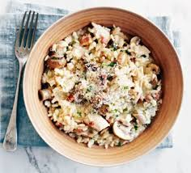

Chicken & Mushroom Risotto

A not-so-sticky rice ball
Risotto is a classic that everybody should try. This easy creamy Chicken & Mushroom Risotto will be a great start!
No more needing to stand over the stove and stir constantly. With this recipe, it will be much easier to prepare allowing those
lacking Gordon Ramsay kitchen skills the ability to enjoy a wonderful dish.
Ingredients
- 1 tsp - tbsp olive olive
- 2.5 oz / 75 g bacon (preferably steak / fatty) (optional)
- 12 oz / 350 g chicken thigh fillets, cut into bite size pieces
- 13 oz / 400 g mushrooms, sliced (Swiss brown is a mushroom option
- 2 tbsp / 30 g unsalted butter
- 2 garlic cloves, minced
- 1 onion, finely diced (brown, white, yellow)
- 1/2 cup / 125 ml white wine optional - sub with water or chicken broth
- 1 1/4 cups / 250 g arborio risotto rice, uncooked (risotto must be made with arborio rice)
- 4 cups / 1 litre chicken broth/stock
Directions
- Heat 1 tsp oil in a pot or skillet (a large pot or deep skillet MUST be used for the no-stir method) over high heat. Add bacon and cook until golden. Transfer to small microwave-proof bowl.
- Leave about 1 tbsp bacon fat in pot - discard excess. Add chicken (actual amount of oil required depends on how fatty the chicken and bacon is) and cook until browned and cooked through. Transfer to separate bowl.
- Add mushrooms* and cook until light golden. Add to bowl with chicken.
- Turn heat down to medium and return pot to the stove. Add butter, and melt. Add garlic and onion. Sauté for 3 minutes or until softened.
- Turn heat up to high, add rice and stir until the grains become partially translucent - no longer than 1 minute. (DO NOT overcook the rice)
- Add wine (or substitute) and cook, scraping the bottom of the pot (to get any brown bits), until the alcohol smell evaporates ~ 2 minutes.
- Turn heat down to medium low. Add about 3 cups of stock. Then leave it, uncovered, stirring just once or twice, until most of the liquid has been absorbed.
- Check firmness of rice and add 1/2 cup of stock at a time, stirring in between until absorbed, until the rice is cooked to your taste. (Rice should be firm but not hard)
- Add chicken and mushrooms back into the risotto towards the end, just to heat through.
- Right at the end when the risotto is ready, add a splash of chicken broth to make the risotto to make it slightly soupy, then take it off the stove.
- KEY STEP: Add butter (the more the better!) and parmesan, then stir vigorously (activates the starch and makes it super creamy).
The excess liquid will evaporate quickly, so add more if you want a soupier risotto, like what you get at posh restaurants.
- Serve IMMEDIATELY!! (rice will become soggy if left out) Garnish with reheated bacon, and extra parmesan and parsley if desired.